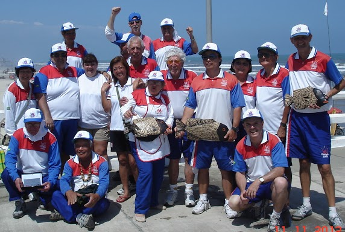

Pesca e Lançamento


Nas praias calorosas de Brasa, uma equipe apaixonada pela pesca se formou, composta por quatro amigos unidos por sua dedicação: um estrategista astuto, um conhecedor da vida marinha, um contador de histórias nato e um observador perspicaz da natureza. Impulsionados pela busca por um peixe lendário, eles partiram em expedições repletas de amizade, superando obstáculos naturais e encontrando momentos de conexão profunda com o ambiente à beira-mar.
Siga o clube Brasa de Pesca nas redes sociais e fique por dentro de tudo